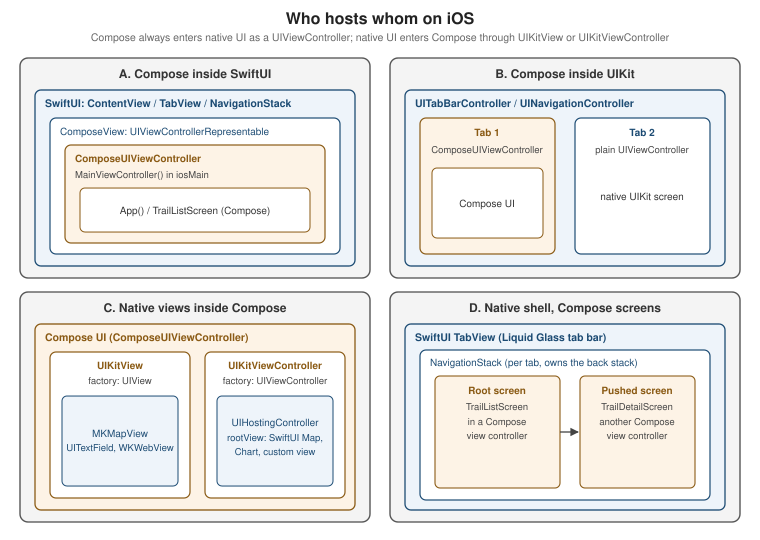

Compose Multiplatform on iOS: UIKit and SwiftUI Interop
|
This content was generated with the assistance of AI and should be verified against the official documentation before being relied on in production. |
Compose Multiplatform (CMP) on iOS draws its own pixels with Skia on a Metal surface, yet the app around it is a
normal iOS app: UIKit view controllers, SwiftUI scenes, Info.plist keys, the system keyboard and VoiceOver. Almost
every real project therefore has to answer three practical questions. How does Compose get onto the screen
(it is wrapped in a UIViewController)? How does a native view get inside a Compose screen (it is wrapped in a
UIKitView or UIKitViewController)? And who owns navigation (Compose, UIKit or SwiftUI)? This page answers
them in that order, then covers touch, text input, accessibility, rendering configuration and a staged migration
path.
The baseline is the one used across this section: Kotlin 2.4.20, Compose Multiplatform 1.12.1, AGP 9.4,
Xcode 26.4; Ktor 3.6.0, Koin 4.2.2, SKIE 0.10.15, KMP-NativeCoroutines 1.0.6, SQLDelight 2.4.0, Room 3
(androidx.room3) 3.0.3, Mokkery 3.5.0, vanniktech 0.37.0, Dokka 2.2.0 and Turbine 1.2.1 are the library versions
used by the neighbouring pages. Stability levels: CMP for iOS is Stable, as is ComposeUIViewController;
UIKitView and UIKitViewController are Stable, while the UIKitInteropProperties constructors (touch
interactionMode, isNativeAccessibilityEnabled, placedAsOverlay) and the native text input implementation are
Experimental. Swift export and SwiftPM import are Alpha; Kotlin/Wasm and CMP for web are Beta.
Every example is a slice of TrailMate Everywhere, the multiplatform version of the Android section’s
TrailMate app (package com.example.trailmate): the shared Compose screens live in
sharedUI, the Xcode project in iosApp. The Compose side is never re-taught — see
Compose Fundamentals and
Compose Multiplatform Fundamentals — and
neither is SwiftUI (SwiftUI Navigation and Presentation)
or UIKit (UIKit and AppKit Essentials, and Mixing Them with SwiftUI).
How the Kotlin framework reaches Xcode is on
Integrating Shared Code into iOS, and what the
generated Swift names look like on
Objective-C Interop, Swift Export and SKIE.
The Big Picture: Four Nesting Options
Interop on iOS is asymmetric. Compose can only enter native UI as a UIViewController (that is what
ComposeUIViewController returns), and native UI can only enter Compose through a UIView (UIKitView) or a
UIViewController (UIKitViewController). SwiftUI is never embedded directly: it always passes through
UIViewControllerRepresentable in one direction and UIHostingController in the other. The four shapes below cover
nearly every app.

| Shape | Who owns navigation and chrome | Choose it when | Cost |
|---|---|---|---|
A. Compose inside SwiftUI |
SwiftUI ( |
The iOS app is SwiftUI and one or more screens are shared UI. |
One representable per Compose root; each is a separate Skia surface. |
B. Compose inside UIKit |
UIKit ( |
An existing UIKit app adds shared screens. |
Same as A; the container controller owns lifecycle and rotation. |
C. Native views inside Compose |
Compose ( |
A mostly shared UI needs a few native-only views (maps, web, camera, a native control). |
Interop views are real `UIView`s over or under the Skia surface — clipping, touch and accessibility need care. |
D. Native shell, Compose screens |
SwiftUI (or UIKit) owns tabs and back stack; Compose renders screen content |
The platform chrome (iOS 26 Liquid Glass tab bar, native back gesture) must be real, content is shared. |
Navigation state is split between Swift and Kotlin and must be bridged explicitly. |
Compose Inside iOS: ComposeUIViewController
ComposeUIViewController is a function in the androidx.compose.ui.window package (CMP, iosMain) that takes a
composable lambda and returns a UIViewController whose view is a Compose surface. Because it is an ordinary view
controller, anything that can host one can host Compose. The TrailMate entry point is a one-liner in the shared UI
module’s iOS source set.
// sharedUI/src/iosMain/kotlin/com/example/trailmate/MainViewController.kt
package com.example.trailmate
import androidx.compose.ui.window.ComposeUIViewController
import com.example.trailmate.ui.App
import platform.UIKit.UIViewController
// Called from Swift as MainViewControllerKt.MainViewController()
fun MainViewController(): UIViewController = ComposeUIViewController { App() }The Swift name is generated from the Kotlin file and function: a top-level function in MainViewController.kt
appears as MainViewControllerKt.MainViewController() under the Objective-C header (the exact spelling is
explained on Objective-C Interop, Swift Export and
SKIE). The framework baseName — ComposeApp for the wizard template, Shared in earlier TrailMate pages — is
the module you import. Renaming the Kotlin file silently renames the Swift symbol, which is the most common cause
of "cannot find MainViewControllerKt in scope" after a refactor.
Hosting in SwiftUI with UIViewControllerRepresentable
SwiftUI has no concept of a Kotlin view controller, so the bridge is the standard
UIViewControllerRepresentable protocol. This is the same wrapper you would write for any UIKit controller; nothing
about it is Kotlin-specific.
// iosApp/iosApp/ComposeView.swift
import SwiftUI
import Shared // the Kotlin framework (baseName = "Shared")
struct ComposeView: UIViewControllerRepresentable {
func makeUIViewController(context: Context) -> UIViewController {
MainViewControllerKt.MainViewController()
}
func updateUIViewController(_ uiViewController: UIViewController, context: Context) {
// Compose owns its own state; nothing to push down in the simplest case.
}
}
struct ContentView: View {
var body: some View {
ComposeView()
.ignoresSafeArea() // Compose handles insets itself, see below
}
}makeUIViewController runs once per identity of the representable in the SwiftUI tree, so the Compose state
survives SwiftUI re-renders of the parent. The consequence of updateUIViewController doing nothing is that data
does not flow from Swift into Compose after creation; if it must, pass it through constructor arguments of the Kotlin
entry point (see "Passing Data Between Swift and Compose" below) or share a state holder — never recreate the
controller, which would reset the Compose state.
The Info.plist Key That Prevents a Crash
Compose renders at the display’s native refresh rate, which on ProMotion iPhones means a rate above 60 Hz. iOS
refuses to schedule such display links for third-party apps unless the Info.plist opts in. The key is
CADisableMinimumFrameDurationOnPhone and its absence crashes the app at runtime when the first Compose view
appears.
<!-- iosApp/iosApp/Info.plist -->
<key>CADisableMinimumFrameDurationOnPhone</key>
<true/>The KMP wizard template and the IDE plugin write this key for new projects, so it is mainly a problem when adding Compose to an existing app. Check that the key exists in the built bundle, not only in the source tree, because projects that generate their Info.plist at build time can lose it.
Hosting in UIKit
In a UIKit app the controller is added like any other child: push it, present it, or place it inside a container controller. Compose then fills the container’s content area.
// iosApp/iosApp/TrailMateTabBarController.swift
import UIKit
import Shared
final class TrailMateTabBarController: UITabBarController {
override func viewDidLoad() {
super.viewDidLoad()
let compose = MainViewControllerKt.MainViewController()
compose.title = "Trails"
let settings = NativeSettingsViewController() // plain UIKit screen
settings.title = "Settings"
viewControllers = [
UINavigationController(rootViewController: compose),
UINavigationController(rootViewController: settings),
]
}
}Wrapping each tab in a UINavigationController gives native titles; if Compose already draws its own top app
bar, hide the navigation bar (navigationController?.setNavigationBarHidden(true, animated: false)) to avoid two
title bars.
Passing Data Between Swift and Compose
The entry-point function is plain Kotlin, so parameters, callbacks and shared objects are the interop channel. The
cleanest pattern keeps the shared ViewModels in sharedLogic and hands the Compose side whatever Swift owns — typically callbacks.
// sharedUI/src/iosMain/kotlin/com/example/trailmate/MainViewController.kt
package com.example.trailmate
import androidx.compose.ui.window.ComposeUIViewController
import com.example.trailmate.ui.App
import platform.UIKit.UIViewController
fun MainViewController(
onShareTrail: (trailId: String) -> Unit, // implemented in Swift (share sheet)
onOpenSystemSettings: () -> Unit,
): UIViewController = ComposeUIViewController {
App(
onShareTrail = onShareTrail,
onOpenSystemSettings = onOpenSystemSettings,
)
}On the Swift side the call is MainViewControllerKt.MainViewController(onShareTrail: \{ trailId in … }, onOpenSystemSettings: \{ … }), using trailing closures exactly as for any Swift API.
Kotlin function types become Swift closures, with Unit becoming Void (or KotlinUnit in a generic
position — see Objective-C Interop, Swift Export
and SKIE). This is the standard answer to "Compose needs an iOS-only capability": Compose calls a callback, Swift
performs it. The Kotlin-native alternative, an expect/actual interface implemented in iosMain, is covered on
expect/actual and Platform APIs.
Insets, Keyboard and Safe Areas
Compose on iOS reads the safe area and the keyboard from the hosting view, so the usual common APIs
(WindowInsets.safeDrawing, Modifier.safeDrawingPadding(), imePadding()) work. The SwiftUI side must cooperate:
add .ignoresSafeArea() (or .ignoresSafeArea(.keyboard) where Compose sets its own keyboard padding) so SwiftUI
does not shrink the Compose frame and Compose then pads again, which produces double insets. Detailed inset
handling is on
Layouts, Material 3,
Adaptive UI, Popups and Accessibility.
Native Views Inside Compose
The reverse direction is UIKitView (a single UIView) and UIKitViewController (a UIViewController, needed
for SwiftUI and for views that rely on view-controller lifecycle). Both live in iosMain because they reference
platform.UIKit types; common code reaches them through an expect composable or a callback parameter.
| API | Wraps | Use for |
|---|---|---|
|
A |
|
|
A |
|
Both take factory (create once), update (called when observed Compose state read inside it changes), modifier
(Compose decides the size — native views have no intrinsic size here, so give them size, fillMaxWidth or
height), and optional onReset/onRelease for pooling and cleanup.
UIKit in Compose: the MKMapView for TrailMate
TrailMate’s detail screen shows a map. Maps are a good interop candidate: MapKit is mature, free and on-device,
and re-implementing it in Compose is out of the question. This iosMain composable embeds an MKMapView and moves
the camera when the Compose-owned selected trail changes.
// sharedUI/src/iosMain/kotlin/com/example/trailmate/ui/TrailMap.ios.kt
package com.example.trailmate.ui
import androidx.compose.runtime.Composable
import androidx.compose.ui.Modifier
import androidx.compose.ui.viewinterop.UIKitView
import kotlinx.cinterop.ExperimentalForeignApi
import kotlinx.cinterop.useContents
import platform.CoreLocation.CLLocationCoordinate2DMake
import platform.MapKit.MKCoordinateRegionMakeWithDistance
import platform.MapKit.MKMapView
import platform.MapKit.MKPointAnnotation
@OptIn(ExperimentalForeignApi::class)
@Composable
actual fun TrailMap(latitude: Double, longitude: Double, title: String, modifier: Modifier) {
UIKitView(
factory = { MKMapView().apply { showsUserLocation = true } },
modifier = modifier,
update = { map ->
val center = CLLocationCoordinate2DMake(latitude, longitude)
map.removeAnnotations(map.annotations)
map.addAnnotation(MKPointAnnotation().apply {
setCoordinate(center)
setTitle(title)
})
map.setRegion(MKCoordinateRegionMakeWithDistance(center, 4_000.0, 4_000.0), animated = true)
},
onRelease = { map -> map.removeAnnotations(map.annotations) },
)
}// sharedUI/src/commonMain/kotlin/com/example/trailmate/ui/TrailMap.kt
package com.example.trailmate.ui
import androidx.compose.runtime.Composable
import androidx.compose.ui.Modifier
/** Platform map: MKMapView on iOS, a Google Maps Compose view on Android, a placeholder elsewhere. */
@Composable
expect fun TrailMap(latitude: Double, longitude: Double, title: String, modifier: Modifier = Modifier)The shape matters more than the map code. factory runs once and builds the view; update is the equivalent of
AndroidView’s `update and re-runs whenever Compose state it reads changes — exactly the place to push new state
into the native view. onRelease releases native resources when the composable leaves the composition. Declaring
TrailMap as expect/actual keeps commonMain free of UIKit while every platform gets a real map; the Android
equivalent is the AndroidView interop covered in
Migrating from Views to Compose. For the MapKit API itself,
see Location and Maps.
SwiftUI in Compose: UIHostingController
You cannot write SwiftUI directly in Kotlin: SwiftUI views are Swift structs that Kotlin/Native cannot
instantiate. The supported route is to create the SwiftUI view in Swift, wrap it in a UIHostingController and pass
a factory for that controller into the Kotlin entry point, where it feeds UIKitViewController.
// sharedUI/src/iosMain/kotlin/com/example/trailmate/MainViewController.kt
package com.example.trailmate
import androidx.compose.foundation.layout.Column
import androidx.compose.foundation.layout.WindowInsets
import androidx.compose.foundation.layout.fillMaxSize
import androidx.compose.foundation.layout.height
import androidx.compose.foundation.layout.systemBars
import androidx.compose.foundation.layout.windowInsetsPadding
import androidx.compose.foundation.layout.fillMaxWidth
import androidx.compose.material3.Text
import androidx.compose.ui.Modifier
import androidx.compose.ui.unit.dp
import androidx.compose.ui.viewinterop.UIKitViewController
import androidx.compose.ui.window.ComposeUIViewController
import platform.UIKit.UIViewController
fun TrailDetailEntryPoint(
createElevationChart: () -> UIViewController, // a SwiftUI Chart wrapped in Swift
): UIViewController = ComposeUIViewController {
Column(Modifier.fillMaxSize().windowInsetsPadding(WindowInsets.systemBars)) {
Text("Elevation profile (SwiftUI Charts)")
UIKitViewController(
factory = createElevationChart,
modifier = Modifier.fillMaxWidth().height(220.dp),
)
}
}// iosApp/iosApp/ElevationChartView.swift
import SwiftUI
import Charts
import Shared
struct ElevationPoint: Identifiable {
let id = UUID()
let distanceKm: Double
let elevationM: Double
}
struct ElevationChartView: View {
let points: [ElevationPoint]
var body: some View {
Chart(points) { LineMark(x: .value("km", $0.distanceKm), y: .value("m", $0.elevationM)) }
}
}
struct ComposeWithChart: UIViewControllerRepresentable {
let points: [ElevationPoint]
func makeUIViewController(context: Context) -> UIViewController {
MainViewControllerKt.TrailDetailEntryPoint(createElevationChart: {
UIHostingController(rootView: ElevationChartView(points: points))
})
}
func updateUIViewController(_ uiViewController: UIViewController, context: Context) {}
}Two practical notes. The factory closure runs inside Compose, so it captures the Swift value it needs at creation
time; to update the chart later, keep a reference to the hosting controller and set rootView from a callback or
an observable object. And the sandwich "SwiftUI hosts Compose hosts SwiftUI" is legal and works, but each layer adds a
view-controller boundary; if most of a screen is native, make that screen native and embed Compose instead (shape D).
Touch Handling in Interop Views
A native view inside a Compose scroll container immediately raises a conflict: when the finger lands on the map, did the user want to pan the map or scroll the list? Compose and UIKit use different gesture systems, so CMP defines the policy explicitly.
| Mode | Behaviour | Status |
|---|---|---|
Cooperative (default since 1.7.0) |
On touch-down CMP waits about 150 ms, modelled on |
Default behaviour is Stable; choosing and tuning it is Experimental. |
NonCooperative |
The previous strategy: every touch in the interop area goes to the native view and Compose never learns about it. |
Experimental API. |
Disabled ( |
Native view receives no touches. |
|
The consequence of cooperative mode is observable: a quick swipe over a map inside a LazyColumn scrolls the list,
while a press-and-hold then drag pans the map. For a full-screen map with no scrollable parent that delay is pure
latency, so use non-cooperative mode.
// sharedUI/src/iosMain/kotlin/com/example/trailmate/ui/TrailMap.ios.kt
package com.example.trailmate.ui
import androidx.compose.runtime.Composable
import androidx.compose.ui.ExperimentalComposeUiApi
import androidx.compose.ui.Modifier
import androidx.compose.ui.viewinterop.UIKitInteropInteractionMode
import androidx.compose.ui.viewinterop.UIKitInteropProperties
import androidx.compose.ui.viewinterop.UIKitView
import kotlinx.cinterop.ExperimentalForeignApi
import platform.MapKit.MKMapView
@OptIn(ExperimentalForeignApi::class, ExperimentalComposeUiApi::class)
@Composable
fun FullScreenTrailMap(modifier: Modifier = Modifier) {
UIKitView(
factory = { MKMapView() },
modifier = modifier,
properties = UIKitInteropProperties(
// No scrollable Compose parent: skip the 150 ms disambiguation delay.
interactionMode = UIKitInteropInteractionMode.NonCooperative,
isNativeAccessibilityEnabled = true, // keep MapKit's own VoiceOver tree
),
)
}For complex gestures inside an interop view, attach UIGestureRecognizer subclasses natively; they can also cancel
the Compose touch sequence. Because UIKitInteropProperties is Experimental, expect the shape to change: the
documentation says the long-term intent is a single boolean for interactability, with the mode derived
automatically.
Native Accessibility for Interop Views
isNativeAccessibilityEnabled decides whether the interop view contributes its own accessibility elements. It is
false by default (it replaced the old accessibilityEnabled parameter, which also changed default). Enabling it
"taints" the merged Compose semantics subtree with native resolution, so turn it on only when the view has rich
accessibility of its own — web views and maps — and leave it off for decorative or simple views whose semantics
you describe from Compose with Modifier.semantics.
Overlay Placement and Autosizing
Two further interop features exist. placedAsOverlay (Experimental) puts the native view above the Compose
surface, so a transparent background or a native blur over Compose content works; the price is that Compose content
can no longer draw over the view. Since CMP 1.10, interop views can also autosize: a UIView without
NSLayoutConstraint-based sizing is measured by its content, so you may omit fixed dimensions for simple views
such as a UILabel.
Rendering, Frame Rate and Concurrency
Compose draws with Skia (via Skiko) on a Metal-backed CAMetalLayer, so the iOS system sees one opaque layer; the
accessibility tree is synthesized from Compose semantics (below). Since CMP 1.11 concurrent rendering (render
tasks off the main thread) is enabled by default, and 1.12 improved lazy-layout scrolling on iOS. Two practical
frame-rate points follow.
-
High refresh rate needs the Info.plist key
CADisableMinimumFrameDurationOnPhone, shown earlier. Without it the app crashes; with it ProMotion devices run Compose at up to 120 Hz. -
Interop views are not Skia. A
MKMapViewcomposited above or below the surface has its own display link and Core Animation cost; many simultaneous interop views (for example one map per row of a list) are expensive. Use one map per screen and a static snapshot (MKMapSnapshotter) for list rows.
Profiling is the same as for any iOS app: Instruments' Time Profiler and Core Animation templates on the iosApp
target, described on Performance and Instruments. Kotlin/Native
specifics (memory manager, symbolication) are on
Kotlin/Native Memory,
Performance and Debugging.
Text Input and the Keyboard
Compose’s TextField historically implemented text editing in Compose and only approximated iOS behaviour. CMP
added a native text input implementation that uses a real UIView conforming to UITextInput and
UIKeyInput, so caret movement, selection, marked text for CJK input, autocorrection, dictation and the magnifier
behave like UIKit. It was introduced in CMP 1.11 and is Experimental; it also pairs with the new context menu
API. Verify the opt-in in
Kotlin docs — What’s new in Compose Multiplatform 1.11.0
before adopting it, because experimental flags move between releases.
IME Options
Common code expresses keyboard behaviour with KeyboardOptions (keyboardType, imeAction, capitalization),
which maps to UIKeyboardType and UIReturnKeyType. Past that, iOS-specific customisation goes through
PlatformImeOptions (since CMP 1.9.0 and extended in 1.10.0): a custom UIResponder.inputView replaces the system
keyboard, and inputAccessoryView attaches a bar above it — a good place for TrailMate’s "Done" or "Next trail"
button.
Common code uses KeyboardOptions with imeAction = ImeAction.Search; the platform differences live in the mapping. Reach for PlatformImeOptions
only when a design truly needs an iOS-only input view, and keep that code in iosMain behind an expect/actual.
Accessibility on iOS
CMP maps the Compose semantics tree to native accessibility objects, so VoiceOver, Switch Control, Voice
Control and XCTest can use a Compose screen like a native one. Material widgets need no extra work; your own
composables should set Modifier.semantics, contentDescription and roles. Modifier.testTag("trailList") surfaces
as the native accessibilityIdentifier, which is how XCUITest locates Compose elements — see
UI Tests, Test Plans and Coverage.
| Concern | How it works on iOS | What you do |
|---|---|---|
Screen reader |
VoiceOver traverses the synthesized tree built from semantics. |
Give images |
Gestures |
Same VoiceOver gestures as native UI. |
Avoid custom gestures with no semantic action equivalent. |
Increase Contrast |
Material3 |
Read |
Mouse, trackpad, keyboard |
AssistiveTouch and Full Keyboard Access are supported. |
Keep controls focusable; test with Full Keyboard Access. |
Interop views |
Native accessibility is off by default ( |
Enable it only for views with their own rich tree (maps, web views). |
Increase Contrast is detected in Swift with UIAccessibility.isDarkerSystemColorsEnabled (and the matching status-change notification) and forwarded to the shared theme through a callback. Further accessibility topics (semantics merging, large-text scaling) are shared with the other platforms on
Layouts, Material 3,
Adaptive UI, Popups and Accessibility, and the native side is on
Accessibility.
Mixing Native and Compose Screens: the Liquid Glass Pattern
iOS 26 gives TabView, NavigationStack and toolbars the Liquid Glass look automatically, but only when they are
native. A Compose-drawn tab bar can imitate it, never match it. JetBrains' tutorial therefore recommends moving
chrome to SwiftUI and keeping content in Compose: a native TabView containing a NavigationStack per tab,
where every root and pushed screen is a Compose view controller (shape D in the figure). It requires Xcode 26 and
the iOS 26 SDK; the design system itself is on
Liquid Glass, Materials and Icons.
The division of labour is explicit.
| Concern | Owned by Swift | Owned by Kotlin |
|---|---|---|
Tab bar, tab selection |
SwiftUI |
Reports which tab content is showing |
Back stack, back gesture, titles |
SwiftUI |
Declares routes with a |
Screen content |
Hosts one |
Compose renders |
Navigation events |
Pushes the route into the stack |
Raises |
On the Kotlin side, the iOS entry point exposes one factory per screen and a navigation callback, and routes carry their own title so Swift never calls back into Kotlin to render a bar.
// sharedUI/src/iosMain/kotlin/com/example/trailmate/NativeShell.kt
package com.example.trailmate
import androidx.compose.ui.window.ComposeUIViewController
import com.example.trailmate.ui.TrailDetailScreen
import com.example.trailmate.ui.TrailListScreen
import com.example.trailmate.ui.TrailMateTheme
import platform.UIKit.UIViewController
fun TrailListViewController(onOpenTrail: (trailId: String, title: String) -> Unit): UIViewController =
ComposeUIViewController {
TrailMateTheme { TrailListScreen(onTrailClick = { onOpenTrail(it.id, it.name) }) }
}
/** A pushed screen rendered standalone; SwiftUI draws the native bar and back button. */
fun TrailDetailViewController(trailId: String): UIViewController =
ComposeUIViewController {
TrailMateTheme { TrailDetailScreen(trailId = trailId, showTopBar = false) }
}// iosApp/iosApp/NativeShellView.swift
import SwiftUI
import Shared
struct TrailRoute: Hashable {
let trailId: String
let title: String
}
struct ComposeScreen: UIViewControllerRepresentable {
let make: () -> UIViewController
func makeUIViewController(context: Context) -> UIViewController { make() }
func updateUIViewController(_ uiViewController: UIViewController, context: Context) {}
}
struct NativeShellView: View {
@State private var trailsPath: [TrailRoute] = []
var body: some View {
TabView {
Tab("Trails", systemImage: "map") {
NavigationStack(path: $trailsPath) {
ComposeScreen {
NativeShellKt.TrailListViewController { trailId, title in
trailsPath.append(TrailRoute(trailId: trailId, title: title))
}
}
.ignoresSafeArea()
.navigationTitle("Trails")
.navigationDestination(for: TrailRoute.self) { route in
ComposeScreen { NativeShellKt.TrailDetailViewController(trailId: route.trailId) }
.ignoresSafeArea()
.navigationTitle(route.title)
}
}
}
Tab("Settings", systemImage: "gearshape") {
NavigationStack { SettingsView() } // a fully native SwiftUI tab
}
}
}
}The Swift file illustrates the pattern rather than a literal copy of the tutorial; the tutorial implements the Kotlin half with Navigation 3 and shows how to intercept routes. The reasoning is worth keeping: back gestures, swipe-to-pop, large titles and the collapsing tab bar are things only native containers get exactly right, while the screens — where the shared-code payoff is — stay in Compose. The same Navigation libraries on the Compose side are covered on Lifecycle, ViewModel and Navigation in Compose Multiplatform.
Incremental Adoption, Screen by Screen
The strongest property of this interop is that it lets you adopt Compose without a rewrite. A common path for a native iOS app that already consumes a shared logic module follows.
-
Share logic first. Expose ViewModels from
sharedLogicto SwiftUI (Architecture and Shared ViewModels, Coroutines and Flow from Swift). -
Add the
sharedUImodule and a single Compose screen with no navigation of its own (a read-only trail detail), hosted by aUIViewControllerRepresentablein an existingNavigationStack. -
Move screens one at a time, from the leaves of the navigation graph inwards, keeping native navigation (shape A or D) until the last native screen is gone.
-
Decide the chrome at the end: keep native tabs and stack for Liquid Glass fidelity, or collapse to
ComposeUIViewController { App() }and let Compose own navigation.
TrailMate Everywhere ships both a SwiftUI TrailListView over the shared ViewModel and a CMP MainViewController version in iosApp; switching is a one-line change in its @main struct. The strategic comparison of native UI versus shared UI is on
What Is Kotlin Multiplatform? and the
iOS integration mechanics on Integrating Shared Code
into iOS.
Migration Notes for Interop APIs
The iOS migration guide lists the breaking changes since 1.7.0 that matter to existing interop code. These are the ones that bite real apps.
| Change | Symptom | Fix |
|---|---|---|
|
Compile error after upgrading |
Set the background in |
New cooperative touch default |
Taps on interop views need a short hold; touches "stop working" |
Use |
|
VoiceOver skips the native view’s content |
Set |
|
Custom frame logic no longer applies |
Use |
|
A reused view differs from the remembered one |
Do not set |
|
No Intel simulator target |
Use |
The remember { UIView() } row is the subtle one: factory and onReset are alternatives, so a non-null
onReset makes Compose reuse a view that is no longer the remembered instance.
Common Mistakes
| Mistake | Consequence and fix |
|---|---|
Missing |
Runtime crash on first Compose frame. Add the key to the built Info.plist. |
Recreating the |
Compose state resets on every SwiftUI update. Create once in |
Forgetting |
Double insets: SwiftUI shrinks the frame and Compose pads again. |
Giving an interop view no size |
It collapses to zero. Use |
One |
Frame drops; use one live map and snapshots for rows. |
Leaving cooperative touch on a full-screen map |
150 ms latency before the map reacts; switch to |
Expecting to write SwiftUI in Kotlin |
It does not compile; build the view in Swift and pass a |